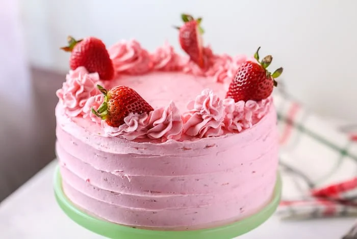

STRAWBERRY CAKE

Preparation Time : 16-20 minutes
Cooking time : 21-25 minutes
Servings : 4
INGREDIENTS
- 1 1/2 cup(s) sifted cake flour
- 1 1/2 teaspoon(s) baking powder
- 1/4 teaspoon(s) salt
- 1/2 cup(s) (1 stick) unsalted butter, softeneds
- 1 cup(s) sugar
- 2 large eggs, room temperature
- 1/2 teaspoon(s) vanilla extract
- Milk 3/4 cup
- 1/2 cup(s) whole milk
DIRECTIONS
-
Step 1:
- Grate strawberry.
- Cut the butter into cubes.
- Grease a Microwave proof dish.
- Melt butter and strawberry in a Microwave proof bowl in the Microwave
oven for one minute on Microwave HIGH (100%).
-
Step 2:
- In another bowl sieve refined flour and baking powder.
- Mix the melted butter and strawberry well.
-
Step 3:
- Add powdered sugar, strawberry essence and mix.
- Add the flour mixture and mix.
- Correct the consistency by adding milk.
- Add walnuts and mix gently.
-
Step 4:
- Transfer the mixture into the greased Microwave proof dish.
- Bake in the Microwave at HIGH (100%) for seven minutes.
-
Step 5:
- Allow standing time of five minutes.
- Cool, slice and serve.
USER COMMENTS
LINKS
Home
-Sujata Kumari
-Nandi